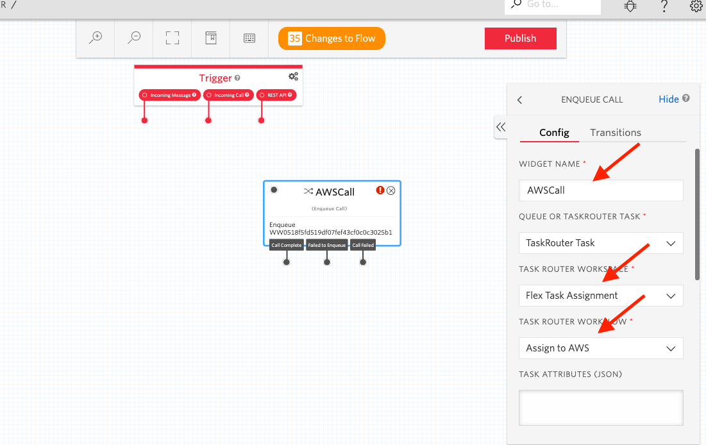

7. エージェントのスキルに基づいて着信をルーティングする¶
Flexデプロイ時に組み込まれているIVRを編集し、発信者がAWSとGCPのどちらかを選択し、そのスキルを持つエージェントにコールをルーティングするようにしてみます。
本ハンズオンではStudioという機能を使って作ります。
Twilio Studioはカスタマーコミュニケーションのデザイン、デプロイ、およびスケールを行うためのビジュアルインターフェイスです。 Twilio Engagement Cloudに新しく加わったTwilio Studioは、何百万という組織横断的なチームメンバーがカスタマーコミュニケーションをデザイン、デプロイ、スケーリングを行うパワーをもたらします。 これにより企業は、全組織におけるクリエイティブな才能を活用して顧客エンゲージメントのロードマップをすばやくトラッキングできるようになります。
参考: https://jp.twilio.com/docs/studio/user-guide
7-1. Voice IVRの編集¶
https://www.twilio.com/console/studioに遷移し、Voice IVRをクリックします。
AWSとGCP用¶
Enqueue Callウィジェットをカンバスにドラックします。
WIDGET NAME:AWSCallTASK ROUTER WORKSPACE:Flex Task AssignmentTASK ROUTER WORKFLOW:Assign to AWS
に設定し保存します。

GCP用も同じように作成します。
WIDGET NAME:GCPCallTASK ROUTER WORKSPACE:Flex Task AssignmentTASK ROUTER WORKFLOW:Assign to GCP
着信を一旦受け付ける用¶
Gather Input on Callををカンバスにドラックします。
着信時に自動応答するように以下の設定をします。
WIDGET NAME: 任意の名前SAY OR PLAY MESSAGE:Say a MessageTEXT TO SAY: AWSは1, GCPは2を押してくださいといったメッセージを入力するLANGUAGE:TEXT TO SAYに入力したメッセージの言語を選択

ボタンプッシュを分割する用¶
Split Based On...ををカンバスにドラックします。
以下の設定をして保存します。
WIDGET NAME:split_keysVARIABLE TO TEST:widgets.gather_1.Digits
着信を分岐させる設定を行います。
Newをクリックし,Condition Matchesをクリックします。
条件として
Equal TO, 1, AWSCall
を設定して保存します。
GCPの方も追加しましょう。
NO CONDITION MATCHESには既存のSendCallToAgentにします。
カンバス上は以下のようになるはずです
残りのウィジェットをつなげる¶
TriggerのIncoming Callをgather_1に、
gather_1のUser Pressed Keysをsplit_keysにつなげます
全体図は以下のようになるはずです。
最後にPublishをクリックして反映させます